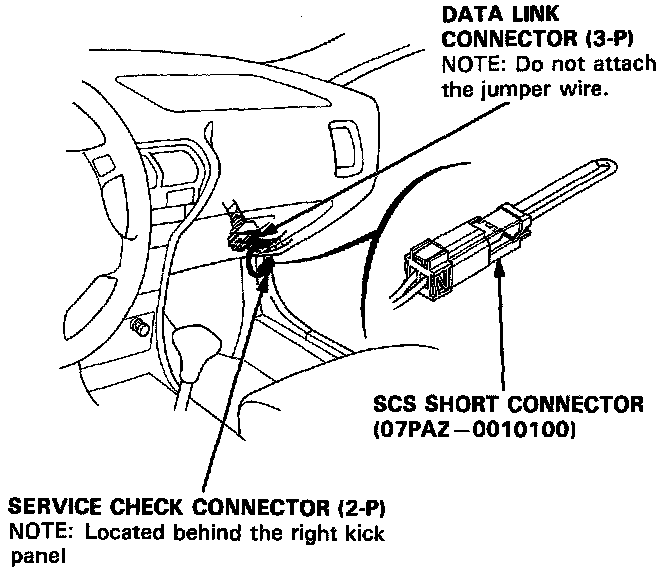
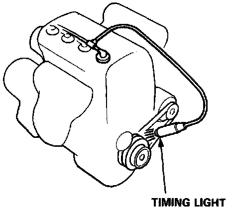
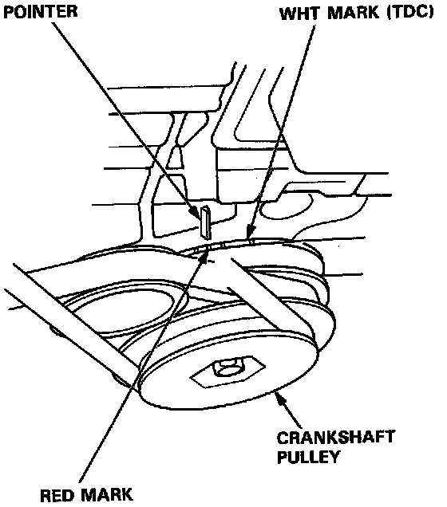
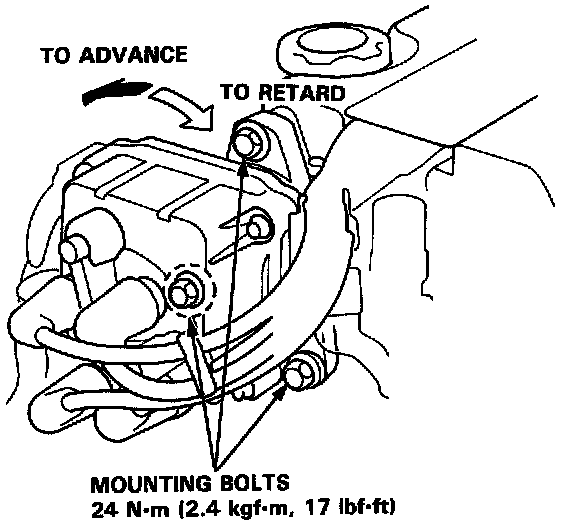

Ignition Timing: Adjustments
1. Start the engine and allow it to warm up (cooling fan comes on).
SCS & DLC Connector Locations:

2. Connect the BRN/WHT and BLK terminals of the 2-wire Service check connector (SCS) located at right, under dash with the SCS short connector.
Timing Light Hookup:

3. Connect a timing light to the engine; while the engine idles, point the light toward the pointer on the timing belt cover.
Timing Mark Location:

4. Adjust ignition timing, if necessary, to the following specifications:
Timing should be: 16±2° BTDC (RED) at 750± 50 rpm in neutral
Distributor Adjustment:

5. Adjust as necessary by loosening the distributor hold-down bolts and turning the distributor housing counterclockwise to advance the timing, or clockwise to retard the timing.
6. Tighten the hold-down bolts and recheck the timing.
Torque to: 24 Nm (17 ft lb)
7. Remove SCS short connector at the Service check connector.